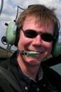

Referenten
| Dannie Jost, Schweiz Dannie spent a few years studying biology, chemistry and physics and living in some cool places then landed in Switzerland to fall in love with a place called Bern. It was love at first sight, and it is a love hate relationship. By accident she was elected to that city’s parliament where she brings her liberal democratic views of governance and discovers that in political life there is a lot of emotion and a bit of rationality at play, and a lot to learn about that thing that they call life. nccr-trade.org/people/jost/ Keynote on Folk theories about space for folks on ships |
Jeremy Tai Abbett
It's not easy sticking a label on Jeremy. Born in Vietnam and raised in Minnesota and Texas, Jeremy is more American than Vietnamese but decides to reside in Germany. Jeremy's higher education has landed him in such diverse places such as Wisconsin, Germany, and Italy. It was in Italy that his focus moved away from the screen and into physical computing working with Casey Reas (processing) and Masimo Banzai (ardunio) among others. In 1996 he co-founded Fork Unstable Media in Hamburg and in 2001 co-founded Truth Dare Double Dare in New York City. Jeremy makes his living consulting for brands and balances this by collaborating with academic institutions in developing projects that lie at the intersection of art and science. And time permitting, he occasionally laces up his skates for a game of ice-hockey. Presentation: The New Scarcity |
| Jan Krutisch Jan is a Rails Pro working for mindmatters in Hamburg. He's also one of the founders of the German rails usergroup. In addition a sound generator and occasional photographer. Präsentation: Artist in Transit |
Karsten Becker, Part-Time Scientists The best thing about being a Part-Time Scientist is doing stuff that I never thought of doing before. Together we tackle the difficult task of making electronics work in space and on the moon. Presentation: Hell yeah, it's rocket science! |
| Matthias Vogt, seamlessinteraction.com Matthias Vogt, geboren in Münster, ist 85er Baujahr und seit kleinauf mit Computern umgeben. Im Jahr 2004 zog er nach Hamburg und begann mit dem Informatik Studium an der HAW Hamburg. Seit 2007 beschäftigt er sich im Rahmen der Bachelorarbeit mit der Mensch Computer Interaktion. Weitere Projekte folgten im anschließenden Masterstudium. Anfang 2011 gründete er mit Kommilitonen die Firma Seamless Interaction als Spin-off des Living Place Hamburg. Präsentation: Concepts of IT based modern living |
Jürgen Neumann Jürgen Neumann ist Berater für IT-Strategie und Implementierung und hat in den vergangenen 20 Jahren für zahlreiche kommerzielle und nicht-kommerzielle Projekte und Organisationen gearbeitet. Im Jahr 2002 hat er freifunk.net, eine Kampagne zur Verbreitung von Know-how über den Bau von selbstverwalteten drahtlosen Funknetzwerken, mitbegründet. Dann 2007 die "Open Hardware Initiative", die im Jahr 2008 den ersten "Open Technology Summit" in Taiwan organisiert hat. Im Augenblick versucht er die Open Source Hardware and Design Alliance ohanda.org an den Start zu bringen und engagiert sich aktiv für ein offeneres Lizenzmodell des Funkfrequenzspektrums bei der Open Spectrum Alliance Europe. Präsentation: OHANDA |
| Tanja Döring
Tanja hat Informatik und Kunstgeschichte an der Universität Hamburg und an der Universidad de Valladolid (Spanien) studiert. Sie beschäftigt sich mit Fragen der Mensch-Computer-Interaktion, zur Zeit auch im Rahmen ihrer Arbeit als wissenschaftliche Mitarbeiterin am Lehrstuhl „Pervasive Computing“ an der Universität Duisburg-Essen. Dabei interessieren sie insbesondere die Möglichkeiten der "be-greifbaren Interaktion" (Tangible Interaction), bei der es um das Ineinandergreifen von Realem und Digitalem geht. Präsentation: Tangible und Embodied Interaction |
Axel Sylvester
Axel arbeitet und forscht an den Themen Internet, Tangible Interaction (be-greifbare Interaktion), Physical Computing und an den Möglichkeiten, Technisches und Menschliches zu kombinieren. Für ihn sind Fab Labs großartige Orte, um eigene Ideen umzusetzen und Lösungen für die Herausforderungen unserer Zeit zu finden. Präsentation: Fab Labs - mehr als nur Orte für digitale Fertigung |
| Benjamin Rabe Fingerpainted Benjamin Rabes first digital painting was made back in the 80's on an Atari 600xl in ASCII-Code, when he was 15. Benjamin went to work on corpoarate web projects, eg. for Procter&Gamble and was one of the first European interface-designer to work on a software-project based on agile methods in '98. But he alway kept leaning towards painting. Enter Brushes 2009 he began enjoying fingerpainting and started the blog fingerpainted.it – to embrace this new world. Benjamin lives in Hamburg and is co-founder of the IAMDA. He has been featured in several international art-shows and is co-organizer of the the international mobile art conference in New York. Präsentation: Artist in Transit |
Startseite RSE11Mediathek RSE10 Impressum
RSE11 Programm Referenten Teilnehmer Resonanz Bilder Anreise Über uns